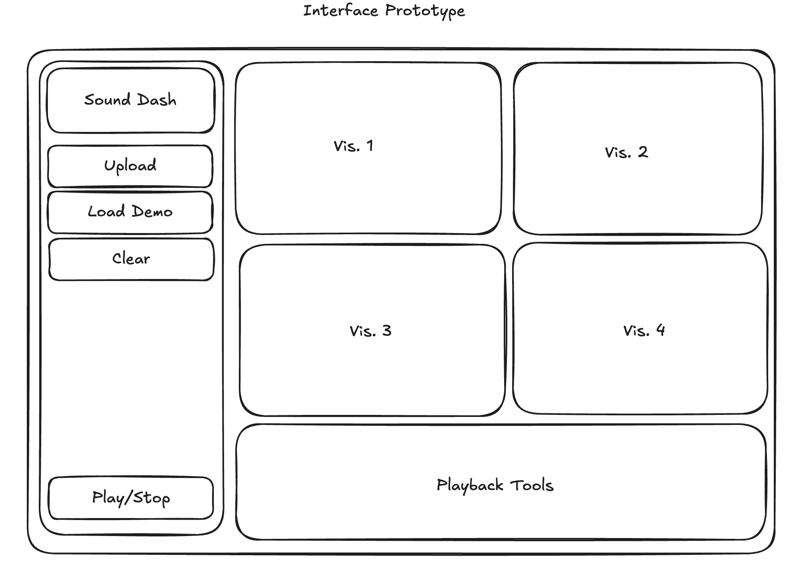

Project
Sound Dashboard

Tolya Evdokimov
Author
#signal_processing #music_informatics
This is a class project for CMSC 336: Music Informatics. I thought it would be interesting to explore how sound is handled through the Web Audio API and try to visualize different features on a static page.
The link to the Sound Dashboard is at the bottom of the page.
Introduction
Music dashboards are a popular tool to visualize different properties of a sound used in sound
engineering, recording studios, and music software like Audacity. The idea of my project is to
reproduce such dashboard in the form of a website where a user can upload their own audio and see multiple visualizations live during the sound playback. The idea is also to use the raw audio and implement as many visualizations as possible from scratch using either plotting software or a basic HTML canvas.
Implementation
I am using plain JavaScript and HTML as a base with WaveSurfer.js as a tool for playback, Web Audio API for streaming audio information live, Plotly.js for dynamic plotting, Tailwind CSS for styling the page, and a WaveSurfer Spectrogram plugin for the STFT visualization.
First, I implemented the live DFT plot. I used a Web API Audio object that is connected to WaveSurfer and an audio context analyzer to extract frequency information. I updated the plot every time there is a time update from WaveSurfer during playback.
Next, I implemented a simple beat detector and a beats per minute display. To detect beats I used a simplified version of a beat detection algorithm. I used the lower frequencies and averaged their amplitudes. If an amplitude reaches a threshold that I pre-defined experimentally, then a beat will be detected, counted, and visualized as a red dot on the screen for 150 ms. The BPM calculation counts the number of beats every 10 seconds, multiplies them by 6, and updates the number on the screen.
To visualize the waveform, I used a Web Audio API utility to copy the current waveform data at a
particular point in time and plot it using an HTML canvas. To represent loudness, I use a bar
visualization that raises and lowers based on the loudness of the sound. I used the Root Mean Square calculation. Based on the RMS value, I calculate the loudness and update the bar visualization on the HTML canvas.
I also implemented the ability to upload your own audio and clear the audio to upload another one.
Results
As a result of the project, I have a static HTML page that implements a dashboard using JavaScript. You are welcome to see it in action below